Riding along a bike path in Tokyo on the way from Hamamatsucho to Roppongi

View of Tokyo Tower while riding bike from Hamamatsucho to Roppongi

Bridge near Hiroshima Station crossed during a night bike ride
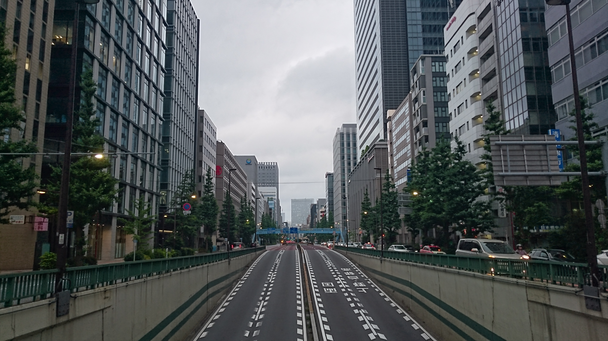
Road near Nihonbashi area in Tokyo during bike ride from Kiyosumi-Shirakawa area to Tokyo Station area
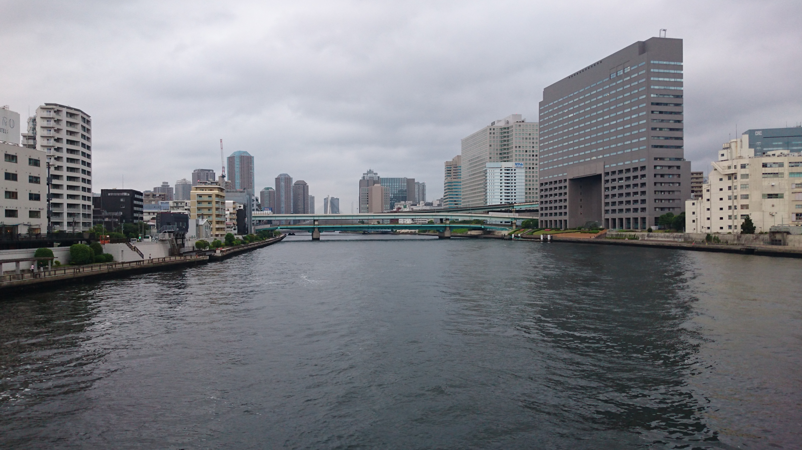
Near the Sumida River during a bike ride from Kiyosumi-Shirakawa area to Tokyo Station area
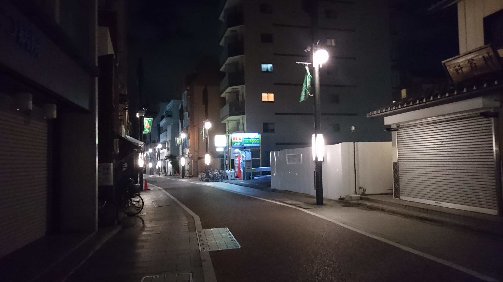
Biking along Kitashinagawa Shopping Street after closure of Keikyu Line past midnight
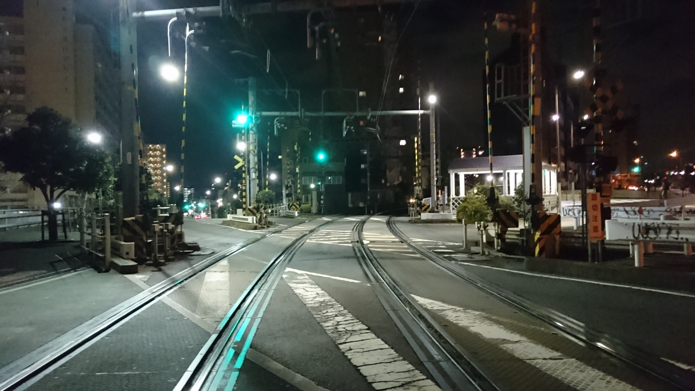
Biking near Kitashinagawa Station after closure of Keikyu Line past midnight
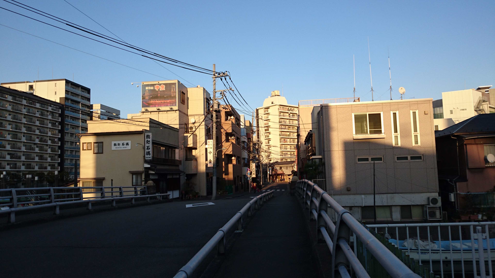
Biking in a residential area in Shinagawa Ward of Tokyo
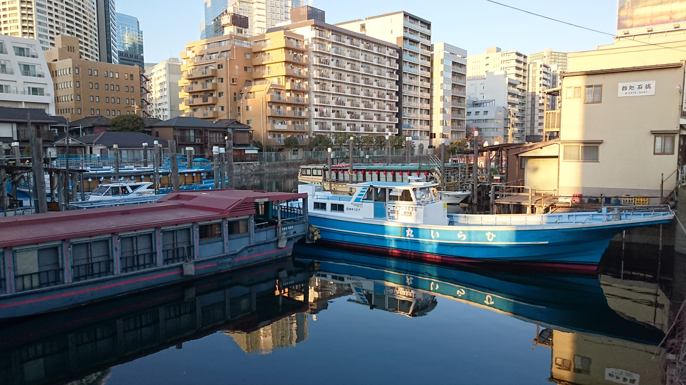
Biking along the river in Shinagawa Ward of Tokyo
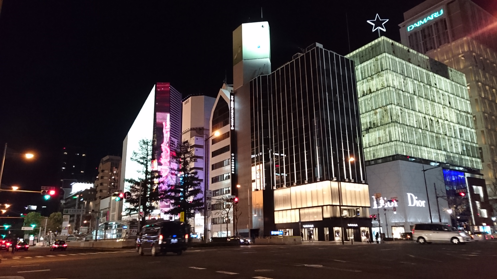
Touring Osaka at night by bike
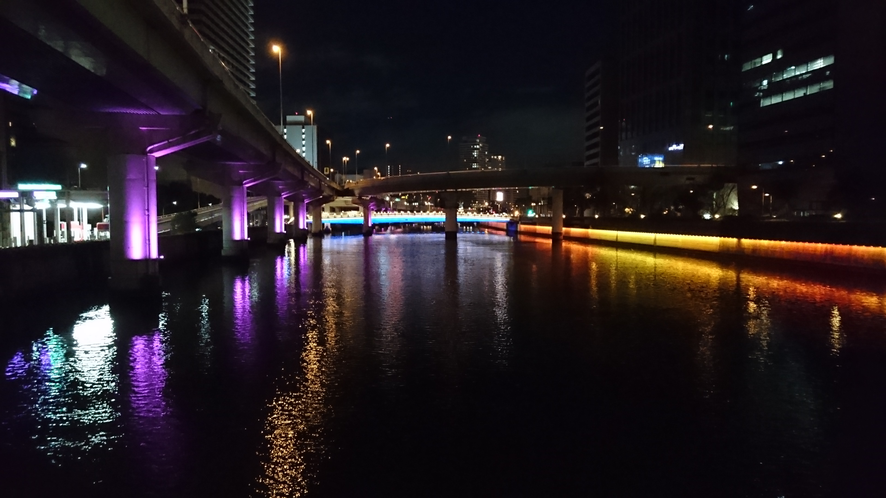
Colorful lights guide the way near Nakanoshima area of Osaka
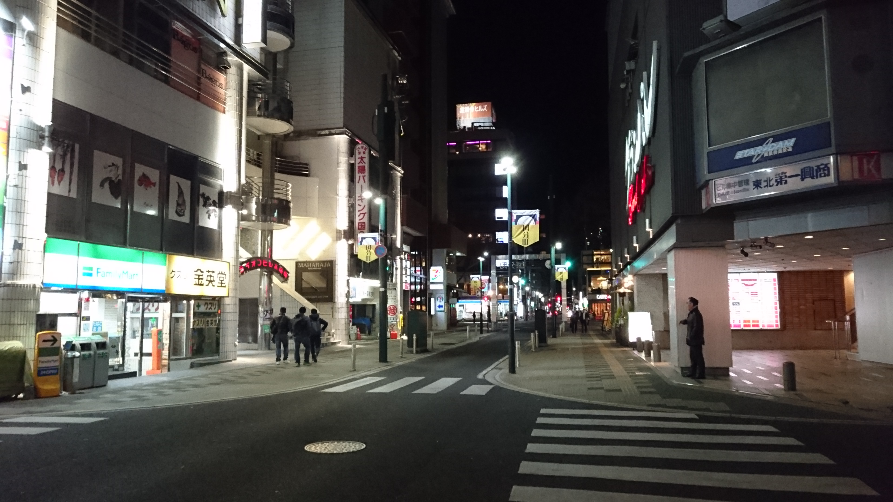
Biking past Sendai's Kokubuncho commercial area at night
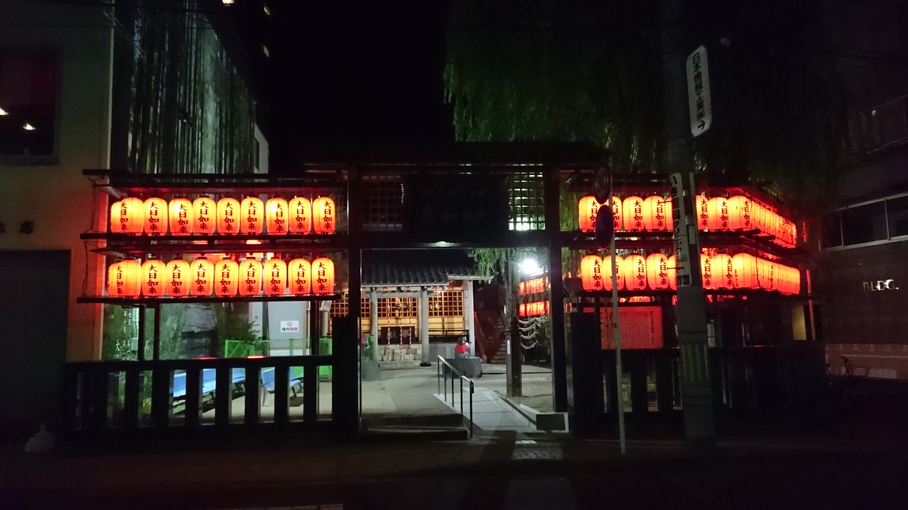
Colorful lantern lights at a temple in Sendai
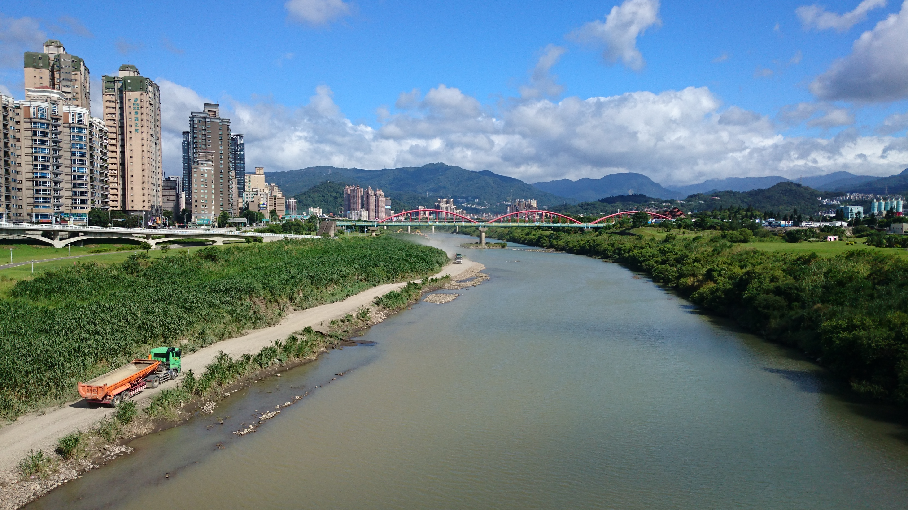
Biking along the Tamsui River near Sunshine Sports Park in Xindian District, New Taipei
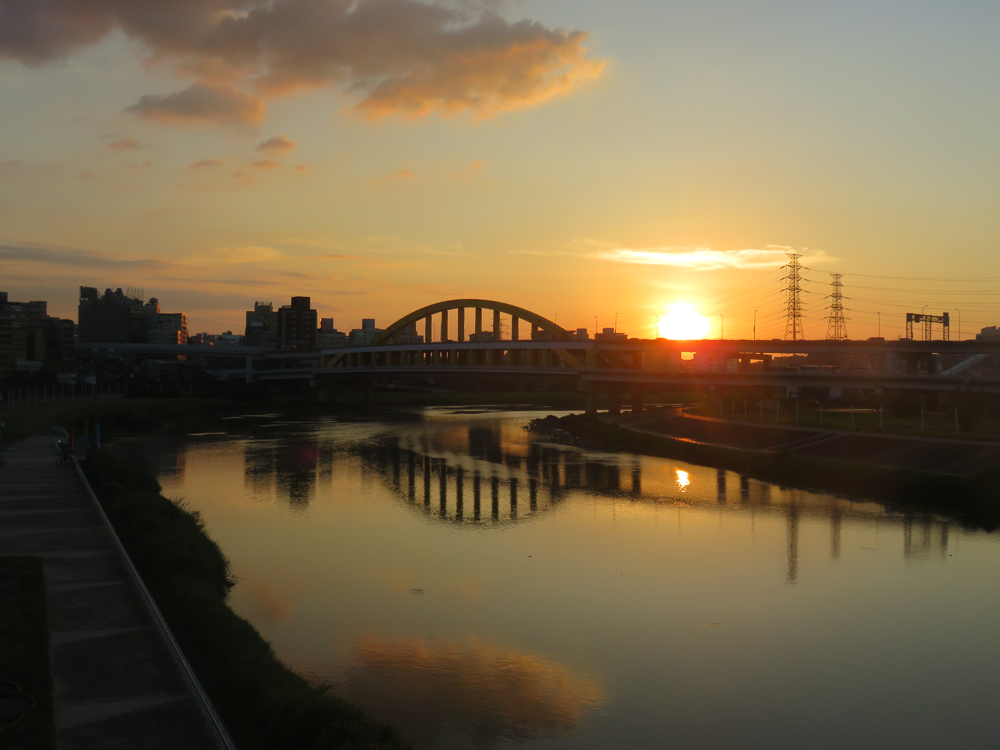
Beautiful sunset along the Keelung River near Raohe Night Market in Songshan District, Taipei
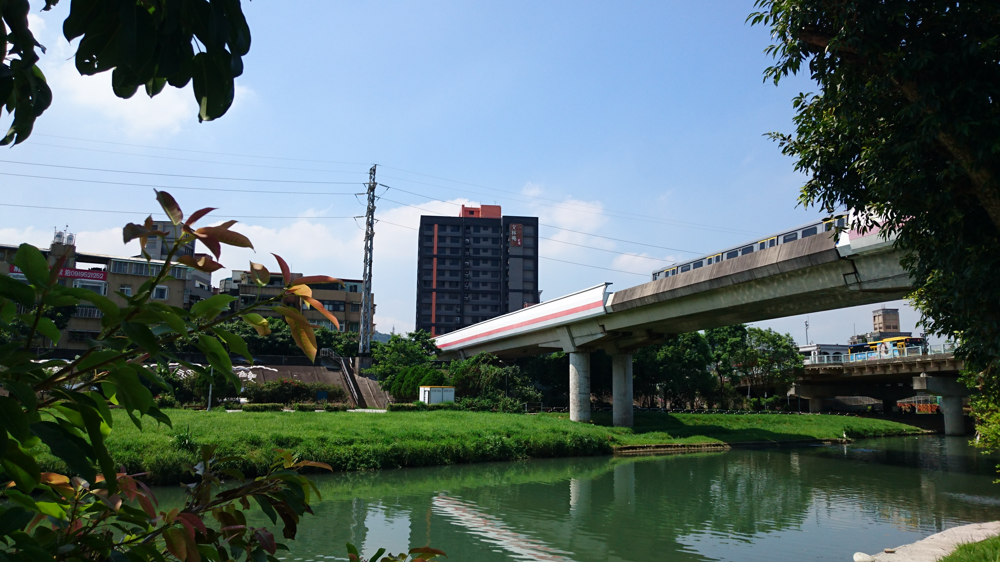
Metro train passing overhead during a daytime bike ride along the Tamsui River near Shilin District, Taipei
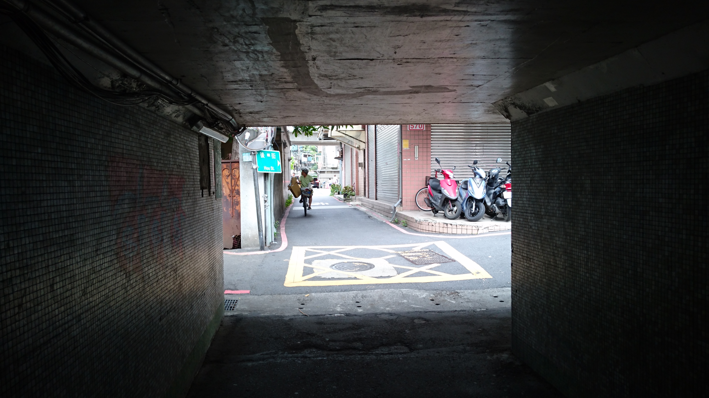
Tiny tunnel for pedestrians and bikers in Taipei
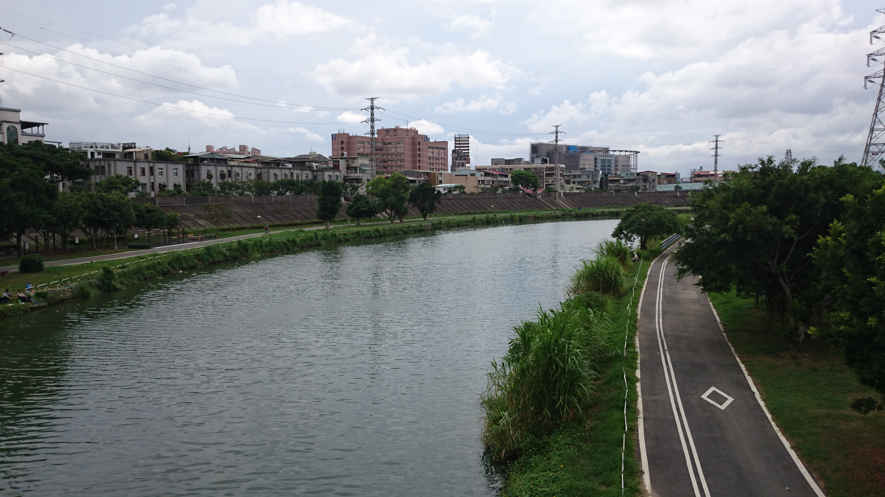
Many of Taipei's bike paths are located near the many rivers of the city